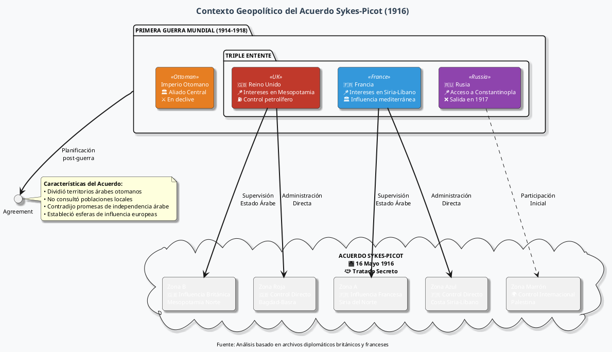
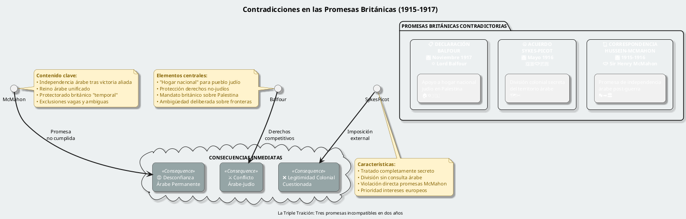
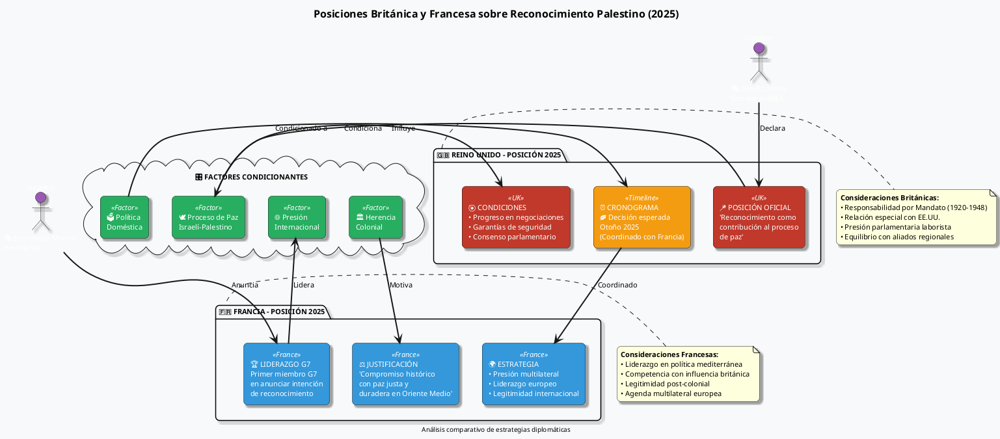
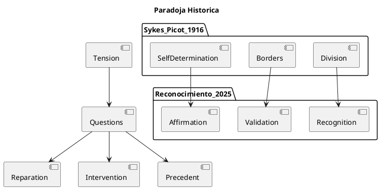
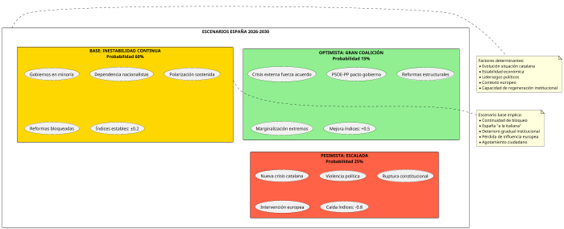

Examen crítico del Acuerdo Sykes-Picot de 1916 y su impacto contemporáneo
Examen crítico del Acuerdo Sykes-Picot de 1916 y su impacto contemporáneo
El Acuerdo Sykes-Picot, firmado en 1916 entre Gran Bretaña y Francia, continúa proyectando su sombra sobre la geopolítica del Oriente Medio más de un siglo después. El acuerdo fue un tratado secreto entre la Triple Entente en 1916 para la partición del Imperio Otomano, que aunque no determinó por sí mismo las fronteras modernas del Oriente Medio, sentó las bases para acuerdos posteriores que sí lo hicieron, dejando así un legado desacreditado entre la población del Oriente Medio.
La relevancia contemporánea de este acuerdo se manifiesta en las recientes declaraciones del Secretario de Relaciones Exteriores británico, David Lammy, quien ha sugerido que la política británica sobre el reconocimiento de un Estado palestino se decidirá en otoño, aparentemente alineando su cronograma con Francia.
Marco Histórico del Acuerdo Sykes-Picot
Contexto y Génesis (1916)

Bajo Sykes-Picot, la costa siria y gran parte del Líbano moderno fueron a Francia; Gran Bretaña tomaría control directo sobre Mesopotamia central y meridional, alrededor de las provincias de Bagdad y Basra. Palestina tendría una administración internacional.
Principios y Divisiones Territoriales
| Zona | Control | Territorio | Implicaciones |
|---|---|---|---|
| Zona A | Influencia Francesa | Siria del Norte, Sur de Anatolia | Francia supervisaría un estado árabe |
| Zona B | Influencia Británica | Mesopotamia del Norte | Reino Unido supervisaría un estado árabe |
| Zona Azul | Control Directo Francés | Costa siria, Líbano | Administración colonial directa |
| Zona Roja | Control Directo Británico | Bagdad, Basra | Administración colonial directa |
| Zona Marrón | Internacional | Palestina | Administración compartida (inicialmente) |
Análisis Crítico del Legado Histórico
Contradicciones Fundamentales

El acuerdo es frecuentemente citado como habiendo creado fronteras "artificiales" en el Oriente Medio, "sin ninguna consideración a las divisiones étnicas o sectarias". Esta crítica fundamental subraya cómo las decisiones coloniales europeas priorizaron intereses geopolíticos sobre realidades demográficas y culturales locales.
Impacto en la Formación de Estados Modernos
El acuerdo proporcionó un entendimiento general de las esferas de influencia británica y francesa en el Oriente Medio, con el objetivo de dividir entre ellas las provincias árabes del Imperio Otomano (sin incluir la Península Arábiga). Esta división arbitraria sentó precedentes problemáticos:
- Fragmentación Artificial: Las fronteras trazadas no respetaron identidades tribales, religiosas o étnicas preexistentes
- Dependencia Económica: Los nuevos estados fueron diseñados para servir intereses metropolitanos
- Inestabilidad Política: La falta de legitimidad popular generó conflictos duraderos
Relevancia Contemporánea: Reino Unido y Francia en 2025
Posiciones Actuales sobre el Reconocimiento Palestino

Francia se convirtió en el primer miembro del G7 en anunciar su intención de reconocer un Estado palestino, con el Presidente Macron describiendo la decisión como parte del "compromiso histórico del país con una paz justa y duradera en el Oriente Medio".
Análisis de Motivaciones
| Motivación | Reino Unido | Francia | Impacto Potencial |
|---|---|---|---|
| Responsabilidad Histórica | Mandato Británico (1920-1948) | Acuerdo Sykes-Picot | Reparación simbólica |
| Presión Diplomática | Parlamento laborista | Iniciativa G7 | Cascada de reconocimientos |
| Legitimidad Internacional | Resoluciones ONU | Derecho internacional | Fortalecimiento multilateral |
| Equilibrio Regional | Relaciones con Arabia Saudí | Influencia mediterránea | Estabilización a largo plazo |
Perspectiva Crítica: ¿Continuidad o Ruptura?
Paradojas del Reconocimiento

La propuesta de reconocimiento presenta una compleja paradoja histórica. Muchos historiadores argumentan que su legado ha contribuido a conflictos en curso, particularmente la lucha israelí-palestina, y ha sido visto como un catalizador para la agitación subsiguiente en la región.
Tres Interpretaciones Críticas
- Interpretación Reparativa: El reconocimiento constituye una corrección tardía de los errores históricos del colonialismo europeo, reconociendo finalmente el derecho palestino a la autodeterminación negado por Sykes-Picot.
- Interpretación Continuista: Las potencias europeas siguen tomando decisiones unilaterales sobre el destino de los pueblos del Oriente Medio, perpetuando patrones coloniales bajo nueva retórica.
- Interpretación Pragmática: El reconocimiento responde a realidades geopolíticas contemporáneas más que a consideraciones históricas, usando el pasado colonial como justificación conveniente.
Implicaciones Analíticas
Lecciones del Pasado y Desafíos del Presente
Es frecuentemente citado como el epítome de la traición colonial europea y la génesis de la mayoría de conflictos en el Oriente Medio. Pero mientras Sykes-Picot sí afectó significativamente la política regional, la historia es más complicada que lo que sugieren las narrativas populares.
### Factores de Complejidad Contemporánea:
| Factor | Dimensión Histórica | Dimensión Actual | Tensión Resultante |
|---|---|---|---|
| Soberanía | Negada a árabes y judíos | Disputada entre israelíes y palestinos | ¿Quién decide las fronteras? |
| Legitimidad | Impuesta externamente | Buscada internacionalmente | ¿Reconocimiento vs. negociación? |
| Autodeterminación | Principio wilsoniano ignorado | Principio ONU invocado | ¿Unilateral vs. bilateral? |
| Fronteras | Líneas arbitrarias | Líneas de armisticio | ¿1967 vs. negociación? |
Escenarios Futuros

Conclusiones Críticas
El análisis del Acuerdo Sykes-Picot y su relevancia para el reconocimiento contemporáneo del Estado palestino revela tensiones profundas entre reparación histórica y realidad geopolítica.
Un siglo después del Acuerdo Sykes-Picot para trazar fronteras en el Oriente Medio firmado en 1916 entre Francia y Gran Bretaña, la región sigue siendo un polvorín político y la ubicación de sucesivos conflictos armados.
### Puntos Clave para la Reflexión:
- Responsabilidad Histórica vs. Pragmatismo: ¿Hasta qué punto las potencias europeas pueden o deben "corregir" errores históricos sin crear nuevos problemas?
- Soberanía vs. Intervención: ¿El reconocimiento unilateral respeta la autodeterminación o constituye una nueva forma de imposición externa?
- Simbolismo vs. Efectividad: ¿Los gestos diplomáticos pueden generar cambios reales o simplemente proporcionan cobertura política?
- Precedente Histórico: ¿Qué lecciones ofrece realmente Sykes-Picot para la diplomacia contemporánea?
La "sombra de 109 años" del Acuerdo Sykes-Picot no radica tanto en sus disposiciones específicas como en lo que representa: la tensión permanente entre el poder de las grandes potencias para rediseñar el mundo y el derecho de los pueblos a determinar su propio destino. El reconocimiento del Estado palestino por parte de Reino Unido y Francia, independiente de sus méritos intrínsecos, debe evaluarse también bajo esta luz histórica.
Referencias Documentales
Fuentes Primarias Sugeridas:
- Texto completo del Acuerdo Sykes-Picot (16 de mayo de 1916)
- Correspondencia Hussein-McMahon (1915-1916)
- Declaración Balfour (2 de noviembre de 1917)
- Resoluciones de la ONU sobre Palestina (194, 242, 338)
Fuentes Académicas Recomendadas:
- Fromkin, David. "A Peace to End All Peace: The Fall of the Ottoman Empire and the Creation of the Modern Middle East"
- Sluglett, Peter. "Britain in Iraq: Contriving King and Country, 1914-1932"
- Khalidi, Rashid. "The Iron Cage: The Story of the Palestinian Struggle for Statehood"
- Rogan, Eugene. "The Fall of the Ottomans: The Great War in the Middle East"
Documentos Contemporáneos:
- Declaraciones oficiales del Foreign Office británico (2025)
- Comunicados del Ministerio de Asuntos Exteriores francés
- Resoluciones parlamentarias británicas sobre reconocimiento palestino
- Documentos de política exterior de la UE sobre el conflicto israelí-palestino
— Documento elaborado para análisis académico y político. Las citas reflejan información disponible hasta agosto de 2025.